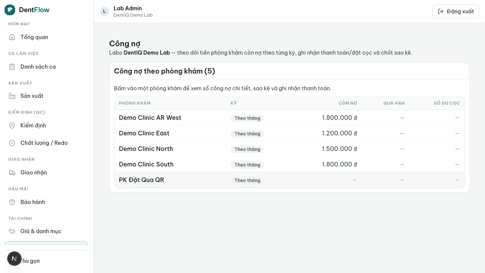

Chốt công nợ cuối tháng
Mô hình thanh toán B2B áp đảo ở labo VN là công nợ-tháng: labo ghi nợ khi giao case, gom theo kỳ tháng cho từng phòng khám, chốt một sao kê, trừ đặt cọc, rồi thu tiền net theo tháng. Cuối tháng, kế toán chốt kỳ per clinic, phát hành sao kê (số dư đầu kỳ + phát sinh − thanh toán − cọc = cuối kỳ), phát hành hoá đơn điện tử (e-invoice), rồi nhắc nợ khéo qua Zalo với clinic quá hạn — thay cho Excel và sổ tay.

Bối cảnh
Trong tháng, mỗi case chuyển delivered đã sinh đúng một bút toán debit vào công nợ của phòng khám tương ứng (trạng thái accrued), tích luỹ chờ chốt. Đến cuối tháng, kế toán labo mở màn công nợ của phòng khám A: có deposit đã trả trước đầu kỳ, nhiều case giao trong tháng, và một phần đã thanh toán. Kế toán chốt kỳ để ra sao kê một con số cuối kỳ, phát hành HĐĐT cho clinic là bên mua, gửi qua Zalo/PDF. Mọi số tiền tính bằng VND.
Diễn viên & quyền cần
| Vai trò | Quyền/điều kiện | Hành động |
|---|---|---|
| Kế toán / chủ labo (lab) | Vai tài chính của chính labo | Chốt kỳ, phát hành sao kê, phát hành HĐĐT, ghi nhận thanh toán, nhắc nợ |
| Nha sĩ / lễ tân / chủ phòng khám (clinic) | Trên công nợ của chính phòng khám | Nhận sao kê + HĐĐT, đối chiếu, trả tiền — chỉ xem, không sửa số |
| Cổng Zalo (actor hệ thống) | Kênh tích hợp | Gửi sao kê + nhắc nợ quá hạn |
| Nhà cung cấp HĐĐT (actor hệ thống) | Adapter đã cấu hình | Ký số + phát hành hoá đơn (qua feature e-invoice) |
Quy trình từng bước
- Ghi nợ suốt kỳ. Mỗi case
deliveredsinh đúng một debitaccruedvào công nợ của clinic tương ứng, tích luỹ chờ chốt (BR-W1). - Chốt kỳ (period close) per clinic. Cuối tháng, gom mọi debit
accruedcủa clinic trong kỳ, trừ deposit đã trả trước. Deposit không làm tổng nợ âm dưới 0; phần thừa giữ on-account, trừ tiếp kỳ sau (BR-W2). - Phát hành sao kê. Ra sao kê: số dư đầu kỳ + phát sinh − thanh toán − cọc = cuối kỳ, trạng thái
statement_issued, gửi qua Zalo/PDF. Số trên sao kê đã chốt là bất biến — điều chỉnh phải tạo bút toán mới sang kỳ sau (BR-W3). - Phát hành HĐĐT. Từ sao kê đã chốt → phát hành e-invoice (
invoiced), uỷ thác cho feature E-invoice Issuance. Labo là bên phát hành, clinic là bên mua; mỗi sao kê kỳ chỉ phát hành HĐĐT một lần để tránh xuất trùng (BR-W4). Nhánh này tuỳ chọn, có thể tắt. - Ghi nhận thanh toán. Theo hạn tháng: thu đủ →
paid; thu một phần →partially_paid(BR-W6 — chỉ role tài chính của labo được ghi nhận). - Nhắc nợ quá hạn qua Zalo. Quá due date (= ngày chốt kỳ + hạn công nợ) mà còn nợ →
overdue+ nhắc nợ khéo qua Zalo, đính kèm sao kê kỳ tương ứng; thu nốt → hội tụ vềpaid(BR-W5).
Kết quả mong đợi
- Mỗi phòng khám có một sao kê kỳ đã chốt với một con số cuối kỳ rõ ràng, đối chiếu khớp.
- Deposit được trừ đúng khi chốt, không làm tổng nợ âm; phần thừa giữ on-account.
- HĐĐT phát hành đúng một lần từ sao kê, truy ngược được về các work order cấu thành.
- Clinic quá hạn được nhắc nợ khéo qua Zalo kèm sao kê; số liệu đủ lịch sử để đối soát.
Khi nào hỏng & cách xử lý
| Triệu chứng | Nguyên nhân | Khắc phục |
|---|---|---|
| Cần sửa số sau khi đã chốt sao kê | Sao kê đã chốt là bất biến | Không sửa số cũ; tạo bút toán điều chỉnh sang kỳ sau (BR-W3) |
| Deposit lớn hơn nợ trong kỳ | Cọc trả trước vượt phát sinh | Trừ tối đa về 0, không âm; phần thừa giữ on-account, trừ tiếp kỳ sau (BR-W2) |
| Cả labo và phòng khám cùng định phát hành HĐĐT một kỳ | Nguy cơ xuất hóa đơn hai lần | Mặc định chỉ labo phát hành; một sao kê kỳ chỉ xuất HĐĐT một lần (BR-W4) |
| Clinic cố sửa số trên sao kê | Sai vai — clinic chỉ được xem | Từ chối theo quyền; chỉ role tài chính của labo chốt/phát hành/ghi nhận (BR-W6) |
| Quá due date vẫn chưa thu đủ | Clinic trả trễ | Chuyển overdue, nhắc nợ khéo qua Zalo kèm sao kê; thu nốt hội tụ về paid (BR-W5) |
Luồng này soạn hợp hai feature: sao kê / công nợ (AR) sở hữu sổ công nợ + deposit + nhắc nợ, còn việc phát hành HĐĐT được uỷ thác cho E-invoice Issuance — luồng billing chỉ feed dữ liệu và đánh dấu trạng thái, không tự dựng XML/ký số. Nếu bước phát hành HĐĐT lỗi, xem Hoá đơn điện tử thất bại.